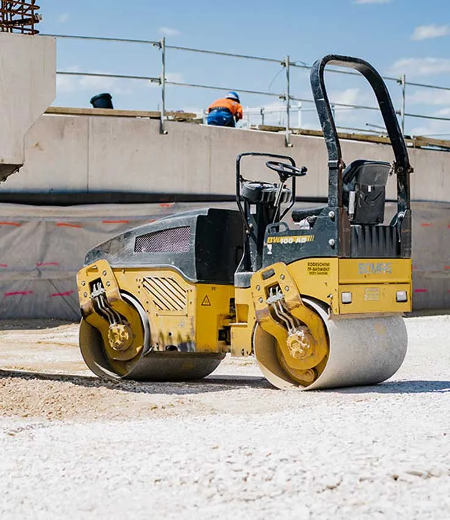
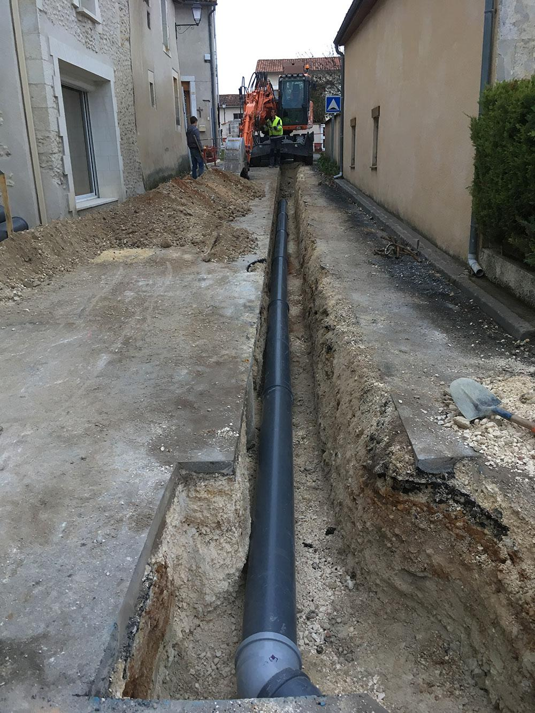
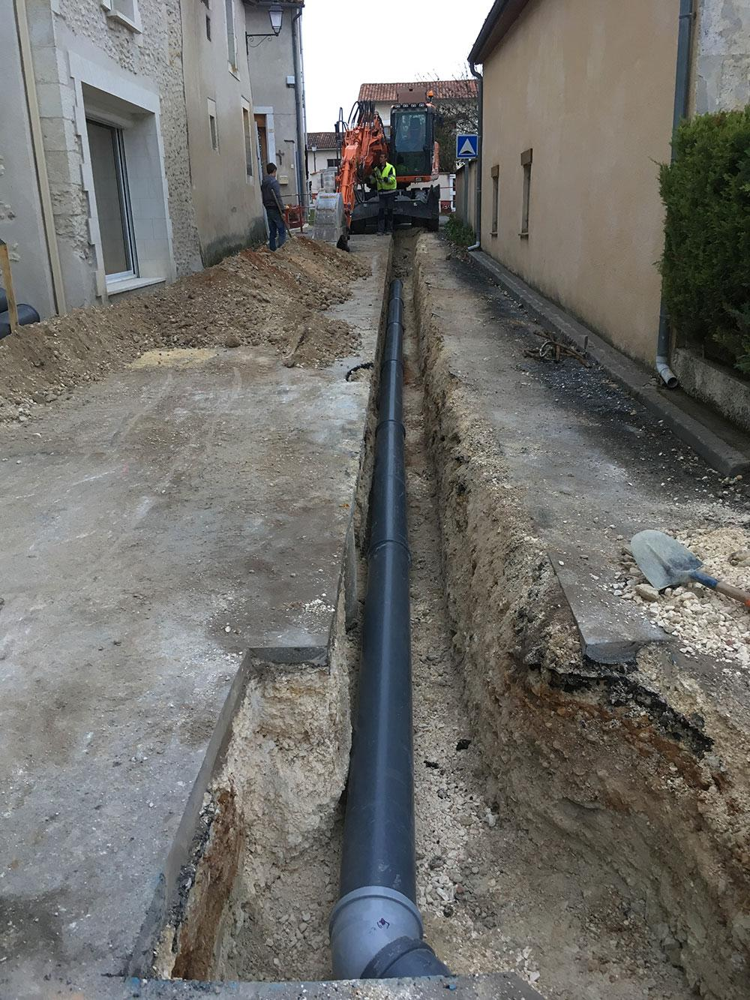

1) Une équipe qualifiée et expérimentée

Chez H.BTP, notre plus grande force réside dans notre équipe, composée de professionnels hautement qualifiés et dotés d’une longue expérience dans le secteur des travaux publics et du terrassement. Chaque membre de notre équipe apporte une expertise technique approfondie et un engagement total pour mener à bien les projets les plus complexes.
1. Des qualifications techniques solides
Nos experts sont formés aux dernières technologies et aux méthodes modernes de construction et de terrassement. Ils maîtrisent parfaitement l'utilisation d’équipements de pointe pour garantir des résultats précis et efficaces, tout en respectant les normes de sécurité les plus strictes. Nos ingénieurs, techniciens, et opérateurs reçoivent régulièrement des formations pour rester à jour avec les innovations du secteur.
2. Une expérience diversifiée
Avec plusieurs années d’expérience dans des projets de différentes envergures — qu’il s’agisse de petits chantiers résidentiels ou de grandes infrastructures industrielles — notre équipe a su relever des défis variés. Cette expérience nous permet d’apporter des solutions adaptées et sur mesure, quel que soit le type de projet, assurant ainsi la satisfaction de nos clients.
3. Une maîtrise des projets de bout en bout
Notre équipe prend en charge l’intégralité de votre projet, de l’étude initiale à la réalisation finale. Grâce à notre expérience, nous sommes en mesure d’anticiper les défis potentiels et de les résoudre efficacement, garantissant ainsi un déroulement sans accroc. Nous collaborons étroitement avec nos clients à chaque étape pour assurer que chaque détail est pris en compte et que leurs besoins sont entièrement satisfaits.
4. Un engagement pour la qualité
Notre équipe est motivée par un engagement sans compromis envers la qualité. Nous ne nous contentons pas de livrer un projet, nous visons l'excellence à chaque étape du processus. Chaque chantier est supervisé par des chefs de projet expérimentés, qui veillent à ce que les travaux soient exécutés selon les plus hauts standards de l'industrie et dans les délais impartis.
5. Une approche collaborative et transparente
Chez H.BTP, nous croyons que la collaboration est la clé du succès. Notre équipe travaille main dans la main avec nos clients, en restant à leur écoute tout au long du projet. Nous croyons en la transparence, en partageant toutes les informations pertinentes, les calendriers de travail, et les éventuels ajustements nécessaires pour garantir que nos clients restent informés à chaque étape.
6. Des résultats garantis
Grâce à notre expertise combinée à une approche rigoureuse, nous livrons des résultats qui non seulement répondent aux attentes de nos clients, mais qui les surpassent souvent. Nous prenons fièrement en charge des projets d'une grande complexité avec la certitude que notre équipe qualifiée saura relever chaque défi.
2)Des équipements modernes et performants
Chez H.BTP, nous savons que la réussite d’un projet de terrassement ou de travaux publics repose autant sur l’expertise de l’équipe que sur l’efficacité des équipements utilisés. C’est pourquoi nous investissons continuellement dans des équipements modernes et performants, conçus pour garantir des résultats de qualité supérieure, tout en optimisant les délais et la sécurité.
1. Une technologie de pointe pour des travaux précis
Nos machines sont équipées des dernières technologies, ce qui nous permet de réaliser des travaux avec une précision inégalée. Grâce à l’utilisation de systèmes de guidage GPS, de lasers de nivellement, et d’équipements intelligents, nous pouvons garantir des découpes et des ajustements parfaits, quelle que soit la complexité du terrain. Ces technologies avancées nous permettent de travailler plus efficacement, en réduisant les marges d’erreur et en maximisant la précision à chaque étape du projet.
2. Une flotte d’équipements diversifiés et spécialisés
Nous disposons d’une flotte complète de machines adaptées à chaque type de chantier : excavatrices, bulldozers, chargeuses, compacteurs, niveleuses, et camions-bennes, entre autres. Cette variété d’équipements nous permet de répondre à des besoins spécifiques, que ce soit pour des travaux de grande envergure ou des projets plus restreints. Nos machines sont régulièrement entretenues et mises à jour pour assurer un fonctionnement optimal sur le terrain.
3. Des performances accrues pour un gain de temps
Les équipements modernes que nous utilisons ne se contentent pas de réaliser les travaux : ils les accomplissent rapidement et efficacement. Grâce à leur puissance et à leur efficacité, nous sommes capables de respecter des délais serrés, tout en maintenant la qualité. Ces machines performantes réduisent également les temps d’arrêt et augmentent la productivité, ce qui permet à nos clients de bénéficier de projets livrés dans les temps.
4. Sécurité renforcée grâce à des équipements fiables
Chez H.BTP, la sécurité est une priorité absolue. Nos équipements sont non seulement puissants, mais aussi conformes aux normes de sécurité les plus strictes. Les machines sont équipées de dispositifs de sécurité modernes, garantissant la protection de nos opérateurs et de l’ensemble du chantier. Cela nous permet de travailler dans des conditions optimales, tout en minimisant les risques d’accidents.
5. Réduction de l’impact environnemental
Nous sommes conscients de l’importance de la préservation de l’environnement dans le secteur des travaux publics. C’est pourquoi une grande partie de notre parc matériel inclut des équipements respectueux de l’environnement, à faible émission et à faible consommation de carburant. Ces machines de nouvelle génération nous permettent de limiter notre empreinte écologique tout en maintenant des performances élevées.
6. Innovation et amélioration continue
Dans un domaine en constante évolution, nous restons à l’affût des dernières innovations technologiques pour continuer à améliorer nos performances. Nous collaborons avec des fabricants leaders du secteur pour être parmi les premiers à intégrer de nouvelles machines et technologies dans nos chantiers, garantissant ainsi que nos clients bénéficient des outils les plus avancés pour la réalisation de leurs projets.

 
